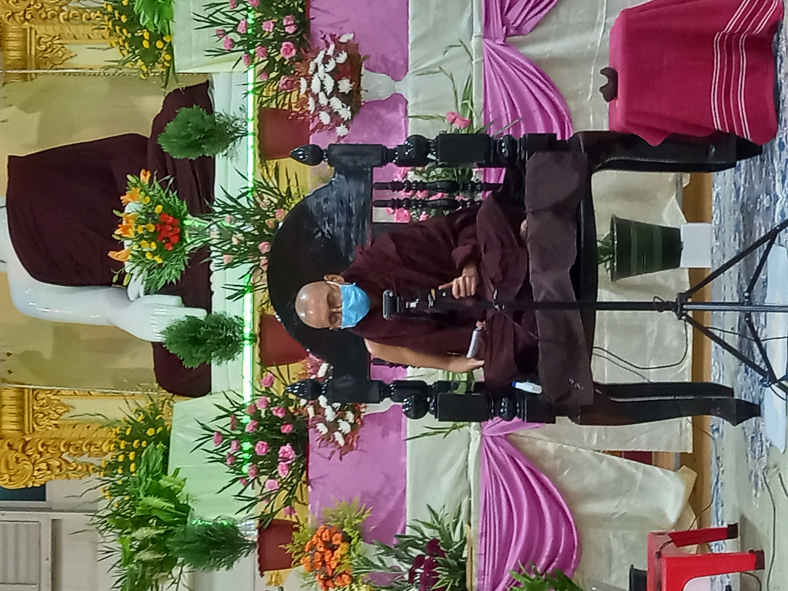
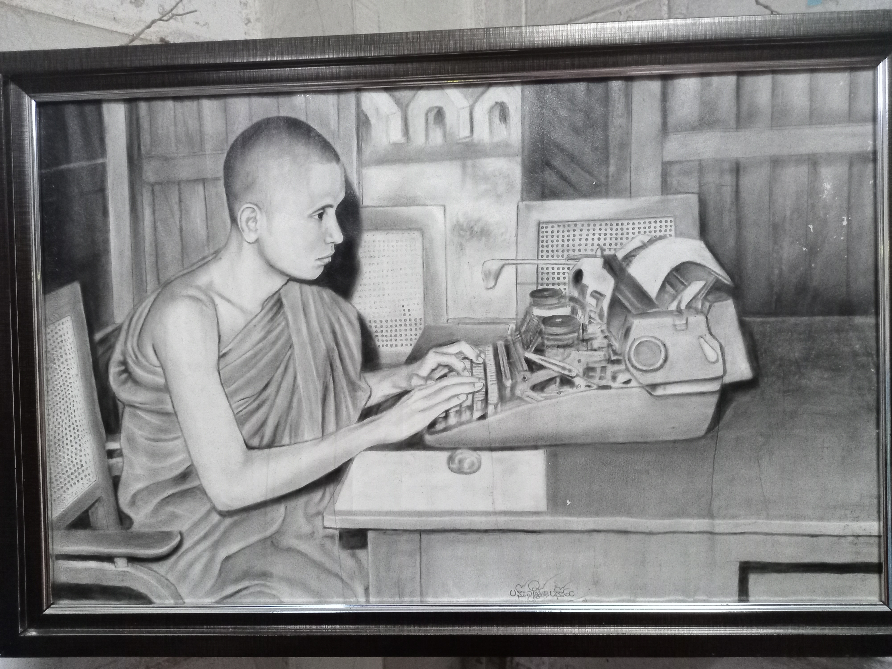
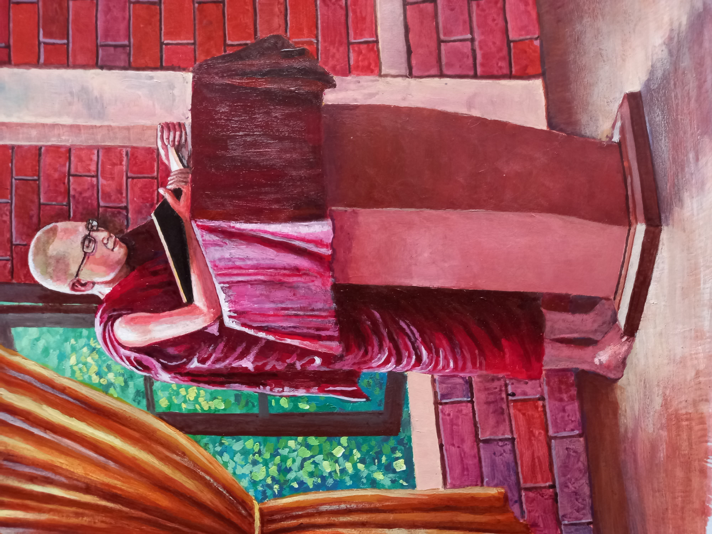
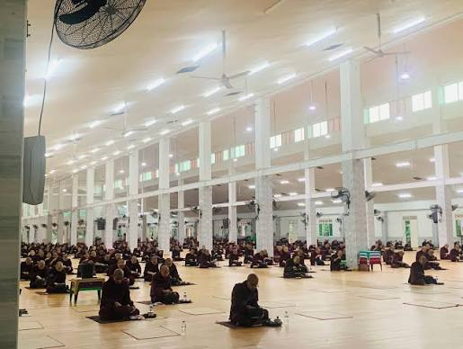
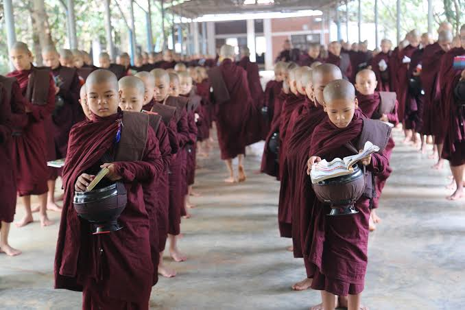

ပုံရိပ်





Welcome to Mahavihara Monastery in Hmawbi. မဟာဝိဟာရကျောင်းတိုက် မှော်ဘီမှ ကြိုဆိုပါသည်။
မဟာဝိဟာရပညာရေးကို မိမိသိရသမျှ အကျဉ်းချုပ်၍ ရေးသားလိုပါသည်။ မြန်မာ နိုင်ငံတွင် ပရိယတ္တိစာသင် တိုက်ကြီးများစွာ အနက် မဟာဝိဟာရကျောင်းတိုက်သည်လည်း ပရိယတ္တိ စာသင်ကျောင်းတိုက်အဖြစ် ရပ်တည် ပါဝင်နေပါသည်။ ကျောင်းတိုက်တည်စက စာသင်သားသံဃာ(၂)ပါးမျှဖြင့် အစပြုခဲ့သော ဤကျောင်းတိုက်သည် ၁၃၇၈- ခုနှစ်တွင်တော့ ဝါဆိုသံဃာ (၁၂၅၀)ပါးလောက်မျှ သီတင်းသုံး သော ကျောင်းတိုက်ကြီးဖြစ်လာခဲ့ပါပြီ။ အောက်မြန်မာပြည်တွင် သံဃာအများဆုံး ကျောင်းဖြစ်ပြီး “ဝိနည်းကျောင်း” ဟူသော နာမည်နှင့်ပါ နိုင်ငံအဝှမ်း လူသိများလာခဲ့ ပါသည်။ ဤသို့သော ကျောင်းတိုက်ကြီးတစ်ခု မည်သို့သောပညာရေးစနစ်ဖြင့် သာသနာခရီး ဆက်နေသည်ကို ဖော်ပြပေးလိုပါသည်။
အခြေခံပညာရေး
မဟာဝိဟာရကျောင်းတိုက်သို့ ရောက် လာကြသော ရဟန်းငယ်၊ ကိုရင်ငယ်များသည် အရည်အချင်းပြည့်စုံပြီးသားချည်း ရောက် လာကြသည်မဟုတ်၊ မြန်မာပြည်အနှံ့အပြားမှ .. မြန်မာစာကို တစ်ခါမှ မသင်ဖူးသော အသက် (၇) နှစ်အရွယ် ကိုရင်ငယ်များလည်း ရှိကြသည် သာ ဖြစ်ပါ၏။ ထိုကိုရင်ငယ်များအတွက် ပိဋကတ်အခြေခံသဒ္ဒါ၊ သင်္ဂြိုဟ်တို့ကို ရှေးဦးစွာ မသင်ယူစေသေးဘဲ အခြေခံပညာအတန်းများ ကို တက်ရောက်သင်ယူစေပါသည်။ ထိုအခြေခံ
ပညာတန်း၌ သူငယ်တန်း၊ ပထမတန်း၊ ဒုတိယတန်း၊ တတိယတန်း၊ စတုတ္ထတန်းဟူ၍ ရှိပါသည်။အတန်းတစ်ခုစီလျှင် (၆)လသတ်မှတ် ထားသည်။ အတန်းတိုင်း၌ မြန်မာစာ၊ အင်္ဂလိပ် စာ၊ သင်္ချာ သုံးဘာသာကိုသာ အဓိကအားဖြင့် သင်ပေး၍ စာမေးပွဲစစ်ဆေးပါသည်။ကျန်သော ပထဝီ၊ သိပ္ပံ၊ သမိုင်းဘာသာတို့ကို ကား ဗဟုသုတအတွက်သာသင်ပေးပြီး စာမေးပွဲတွင် မေးလေ့မရှိပါ။ အပတ်စဉ် အပတ်တိုင်း လေ့ကျင့်ခန်းစာမေးပွဲ စစ်ဆေးလေ့ရှိပါသည်။ ထိုအခြေခံပညာတန်းများကို စာသင်ပေးရန် အတွက် စွမ်းနိုင်ရာ ဦးဇင်းများ၊ ကိုရင်ကြီးများက သင်ကြားပေးကြပါသည်။ ဤအတန်းများ၌ (၂) နှစ်ခန့်တက်ရောက် သင်ကြားပါက မြန်မာစာကို တစ်ခါမှ မသင်ဖူးသေးသော ကိုရင်ငယ်များပင် ရေးတတ်၊ ဖတ်တတ်ပြီး နားလည်နိုင်လောက်အောင်အထိ တိုးတက်
လာကြပါသည်။
ရှင်ကျင့်ဝတ်တန်း
အခြေခံ ပညာရေးတန်းတို့ကို အောင်မြင်ပြီးပါက ရှင်ကျင့်ဝတ်ရိုးရိုးတန်းကို ဝင်ရောက်ဖြေဆိုနိုင်ပါသည်။ အခြေခံပညာ တန်းတို့ကို မအောင်သေးသော်လည်း မြန်မာစာ ကျွမ်းကျွမ်းကျင်ကျင်ဖတ်နိုင်လျှင် ရှင်ကျင့်ဝတ် ရိုးရိုးတန်းကို တက်ရောက်နိုင်သည်သာ ဖြစ်ပါသည်။ မဟာဝိဟာရတွင်ပြဋ္ဌာန်းထား သည်က မဟာဂန္ဓာရုံဆရာတော်ဘုရား၏ ရုပ်ပုံ
ရှင်ကျင့်ဝတ်စာအုပ်ဖြစ်ပါသည်။ မဟာဝိဟာရ တွင် အပတ်တိုင်း ဥပုသ်နေ့များတွင် အပတ်စဉ် စာမေးပွဲရှိသောကြောင့် အပတ်စဉ်မှန်မှန် စာမေးပွဲ ဖြေဆိုကြရသည်။ ရှင့်ကျင့်ဝတ်(ရိုးရိုး) တန်းအတွက် မေးခွန်းလွှာ တစ်ရွက်တွင် (၆)ပုစ္ဆာမေး၍ ၂၄ မှတ်ရလျှင် အောင်သည်။ အပတ်စဉ် (၅)ပတ်အောင်လျှင် ရှင်ကျင့်ဝတ် (ဂုဏ်ထူး)တန်းကို ဝင်ရောက်ဖြေဆိုနိုင် ပါသည်။
ရှင်ကျင့်ဝတ် (ဂုဏ်ထူး) တန်း၌ မဟာဂန္ဓာရုံဆရာတော်၏ ရုပ်ပုံရှင်ကျင့်ဝတ်နှင့် ရတနာ့ဂုဏ်ရည် စာအုပ်နှစ်အုပ် ပြဋ္ဌာန်းထားပါ သည်။ မေးခွန်းလွှာတစ်ခုတွင် (၁၀) ပုစ္ဆာမေးပြီး အောင်မှတ်မှာ (၇၅)မှတ် ဖြစ်သည်။ အပတ်စဉ် စာမေးပွဲ (၄)ပတ်အောင်လျှင် ရှင်ကျင့်ဝတ် (ဂုဏ်ထူး) တန်း အောင်မြင်သည်။ ရှင်ကျင့်ဝတ် (ရိုးရိုး)တန်းမှာရော ရှင်ကျင့်ဝတ် (ဂုဏ်ထူး) တန်းမှာပါ အပတ်စဉ် စာမေးပွဲ ဖြေဆို ရန် အတွက် “ယခုအပတ်ပြဋ္ဌာန်းချက်”ဟု ခေါင်းစဉ် ဖြင့် ပြဋ္ဌာန်းချက်ကို မည်သည့်စာမျက်နှာမှ မည်သည့်စာမျက်နှာအထိ စသည်ဖြင့် ပြဋ္ဌာန်း ချက်ကို ကြော်ငြာသင်ပုန်း၌ ကပ်ထားပေးလေ့ ရှိသည်။ တစ်ခါတစ်ရံ စာချရာ၌ပင် စာချ ဂဏ ဝါစကများက အပတ်စဉ်ပြဋ္ဌာန်းကျမ်းစာကို ပြောပြလိုက်သည်လည်းရှိပါသည်။ ဤ ကျင့်ဝတ် တန်းများအတွက် ပြဋ္ဌာန်းထားသော ရုပ်ပုံရှင်ကျင့်ဝတ်နှင့် ရတနာ့ဂုဏ်ရည် ကျမ်းစာ
နှစ်အုပ်ကို ဂဏဝါစက တစ်ပါးက ကိုရင်ငယ် များနှင့် လိုက်ဖက်ညီအောင် ပို့ချပေးလေ့ရှိပါ သည်။
မူလတန်း
ရှင်ကျင့်ဝတ်ရိုးရိုးတန်းနှင့် ဂုဏ်ထူး တန်းကို အောင်မြင်ပြီးသော ကိုရင်သည် မူလတန်းကို တက်ရောက်ခွင့်ရပါသည်။ တချို့ အရှင်များသည်ကား မြန်မာစာကို ကျွမ်းကျွမ်း ကျင်ကျင်ဖတ်တတ်ရေးတတ်၍ အခြားကျောင်း များ၌လည်း ရှင်ကျင့်ဝတ်တို့ကို ကျက်မှတ်ဖူး ပါလျှင် ရှင်ကျင့်ဝတ်တန်းနှစ်တန်းကို မဖြေဆိုဘဲ မူလတန်းတွင်ဝင်ရောက်ဖြေဆိုနိုင်ပါသည်။ အပတ်တိုင်းဖြေဆိုရသော အပတ်စဉ်စာမေးပွဲ၌ ထို အရှင်များ၏ ရမှတ်ကိုကြည့်၍ ရမှတ် အလွန်တရာနည်းပါးမှု အကြိမ်ရေများလာပါက မူလတန်းမှ တဆင့်ပြန်လည်လျော့ချခံရမည်ဖြစ် ပါသည်။ မူလတန်း၌ ပြဋ္ဌာန်းကျမ်းစာများမှာ ရုပ်ပုံရှင်ကျင့်ဝတ်နှင့် ရတနာ့ဂုဏ်ရည်နှစ်အုပ်ကို တစ်ဘာသာအဖြစ်လည်းကောင်း၊ အခြေပြု သဒ္ဒါတွဲဖက်စာအုပ် အခြေပြုသဒ္ဒါသုတ်နက် စာအုပ်မှ သန္ဓိ၊ နာမ်၊ အာချာတ် (ရုပ်တွက်၊ အဓိပ္ပါယ်ပါဝင်သည်)ကို တစ်ဘာသာအဖြစ် လည်းကောင်း၊ပါဠိသိက္ခာတစ်ဘာသာအတွက် မေးခွန်းလွှာတစ်ခုအားဖြင့် မေးခွန်းလွှာ သုံးရွက် မေးသည်။ မေးခွန်းလွှာတစ်ခုတွင် (၈)ပုစ္ဆာ မေး၍ (၃၂)မှတ်ရလျှင် တစ်ဘာသာအတွက် အောင်မြင်သည်။ သုံးဘာသာလုံး အောင်မြင်မှမူလတန်း အောင်မြင်မည်ဖြစ်ပါသည်။ ထို မူလတန်း အတန်းတင်ရေးဖြေစာမေးပွဲကို နှစ်စဉ် နယုန်လပြည့်ကျော် တစ်ရက်၊ နှစ်ရက်၊ သုံးရက်နေ့များတွင် တစ်ကြိမ်၊ နတ်တော်လ ပြည့်ကျော် တစ်ရက်, နှစ်ရက်, သုံးရက်နေ့တွင် တစ်ကြိမ်အားဖြင့် တစ်နှစ်တွင် နှစ်ကြိမ်ကျင်းပ လေ့ရှိပါသည်။ ထိုရေးဖြေစာမေးပွဲရက်များ မတိုင်မီ တစ်ရက်၊ နှစ်ရက်အလို၌ နှုတ်ထောက် အာဂုံစာမေးပွဲကို ဖြေဆိုရပါဦးမည်။ ယင်း နှုတ်ထောက်အာဂုံစာမေးပွဲ အောင်မြင်မှ သာရေးဖြေ ဖြေဆိုခွင့်ရပါသည်။ ထို (၆)လ ပတ်စာမေးပွဲ၌ အောင်မြင်ကြသော အရှင်များ အား တပို့တွဲလပြည့်နေ့ (ပါတိမောက်အခါ တော်နေ့)၌ အောင်လက်မှတ် ဆက်ကပ်ခံရ မည်ဖြစ်၏။ သာသနာလင်္ကာရ (သာမဏေ ကျော်)လုပ်မည်ဆိုပါက သာမဏေကျော် အခြေပြုတန်းဖြစ်သည့် ဥပစာ (က)တန်းကို ဖြေဆိုခွင့်ရှိပြီဖြစ်ပါသည်။
ပထမငယ်တန်း
ကျောင်းတိုက်စာမေးပွဲ၌ မူလတန်းကို အောင်မြင်ပြီးသူများအတွက် တက်ရောက် နိုင်သည်။ ပြဋ္ဌာန်းချက် ကျမ်းစာများနှင့် မေးခွန်းထုတ်ပုံတို့မှာ အစိုးရစာမေးပွဲအတိုင်း ဖြစ်၍ အထူးရေးစရာမရှိပါချေ။ အခြားကျောင်း မှ ပြောင်းလာပြီး အခြေခံတန်းများမတက်ဘဲ အငယ်တန်းတစ်ခါတည်းဝင်လိုပါက အရည်အချင်း စစ်ခံရမည်ဖြစ်ပါသည်။ အခြား
ကျောင်းများ၌ မူလတန်းအောင်မြင်ပြီး ဖြစ်သည် ဆိုပါက ထိုကျောင်းများ၏ ပညာရေးကို လေးစားသောအားဖြင့် အငယ်တန်း ဝင်ရောက် ဖြေဆိုခွင့် ရမည်ဖြစ်ပါသည်။
အလတ်တန်း၊ အကြီးတန်း
အလတ်တန်း၊ အကြီးတန်းတို့သည် လည်း အငယ်တန်းနှင့် သဘောတူသည်။ အစိုးရစာမေးပွဲပြဋ္ဌာန်းချက်များ အတိုင်းသာ ဖြစ်ပါသည်။ ငယ်၊ လတ်၊ ကြီးတန်းများ၌လည်း အပတ်တိုင်း တစ်ပတ်လျှင် တစ်ဘာသာအား ဖြင့် စာမေးပွဲ ဖြေကြရပါမည်။ ဇာတ်ဘာသာကို ကား ဝါကျွတ်မှ မေးလေ့ရှိသည်ကို တွေ့ရ သည်။ အပတ်စဉ်စာမေးပွဲပြဋ္ဌာန်းချက် တို့သည် ကား ဂဏဝါစကအရှင်မြတ်များ လိုအပ်သလို ပြဋ္ဌာန်းလေ့ရှိပါသည်။ သာမဏေကျော် ပ၊ ဒု၊ တဆင့် အရှင်များက ငယ်၊ လတ်၊ ကြီး ဖြေရန် စာရင်းသွင်းထားပါသော်လည်း ငယ်၊ လတ်၊ ကြီး အပတ်စဉ်ဖြေရန်မလိုချေ။ သို့သော်လည်း နှစ်ပတ်လည် ကျောင်းတွင်းစာမေးပွဲ၌ ဖြေဆိုရ မည်ဖြစ်သည်။ ယင်းစာမေးပွဲကို မဖြေဆိုပါက အစိုးရစာမေးပွဲကို ဝင်ခွင့် မရနိုင်ပါ။ (ငယ်၊ လတ်၊ ကြီးတန်းများ၌ နှစ်ဝက်စာမေးပွဲကို နတ်တော်လ၌ ကျင်းပပေးသည်။)
ဥပစာ (က) တန်း
မူလတန်းအောင်မြင်ပြီးသူ သည် သာမဏေကျော် လုပ်လိုပါက ပထမအဆင့် မဝင်မီ အခြေခံအတန်းများအဖြစ် ဥပစာ (က)နှင့် ဥပစာ (ခ) တန်းတို့ကို ဖြေဆိုရပါဦးမည်။ တစ်တန်းကို ၆-လစီ သတ်မှတ်ထားပါသည်။ ဥပစာ (က) တန်း၌ အခြေပြုသဒ္ဒါတွဲဖက် တစ်အုပ်၊ အခြေပြုသဒ္ဒါသုတ်နက်စာအုပ်မှ သန္ဓိ၊ နာမ်၊ ကာရက၊ အာချာတ် (ရုပ်တွက် အဓိပ္ပါယ်ပါဝင်သည်) ပါဠိသိက္ခာတစ်အုပ်တို့ကို သဒ္ဒါဘာသာအဖြစ်လည်းကောင်း၊ အဘိဓမ္မတ္ထ သင်္ဂဟကျမ်းမှ စိတ်၊ စေတသိက်၊ ပကိဏ်း (ပါဠိ၊ အနက်၊ သရုပ်ခွဲ၊ အဓိပ္ပါယ်ပါဝင်သည်။) ကို အဘိဓမ္မတ္ထသင်္ဂဟဘာသာအဖြစ်လည်းကောင်း၊ ဓမ္မပဒဋ္ဌထာမှ ယမကဝဂ် (ပါဠိစီ၊ အနက်ပေး၊ ကျမ်းရင်း အဓိပ္ပါယ်ပါဝင်) ကို ဓမ္မပဒဋ္ဌကထာ ဘာသာအဖြစ်လည်းကောင်း သုံးဘာသာ ပြဋ္ဌာန်းထားသည်။ သုံးဘာသာအတွက် မေးခွန်းလွှာ သုံးရွက်ပေးသည်။ မေးခွန်းလွှာ တစ်ရွက်၌ (၁ဝ)ပုစ္ဆာမေး၍ အမှတ် (၄ဝ) ရလျှင် တစ်ဘာသာအောင်မြင်သည်။ (၃) ဘာသာ အောင်မြင်လျှင် ဥပစာ (က) အောင်မြင်သည် ဥစာ (က) အောင်လျှင် ဥပစာ (ခ)တန်းတွင်ဆက်လက်သင်
ယူရပါဦးမည်။
ဥပစာ (ခ) တန်း
သာမဏေကျော်အခြေခံဤ ဥပစာ (ခ) တန်း၌ ဝိနည်းမဟာဝါ မဟာခန္ဓက၊ အင်္ဂုတ္တိုရ် ဧကကနိပါတ်၊ ဓမ္မပဒဋ္ဌကထာ ယမကဝဂ်၊ အပ္ပမာဒဝဂ်တို့ကို ပြဋ္ဌာန်းထားသည်။ မေးခွန်း ပုံစံမှာ သာမဏေကျော် ပထမအဆင့် မေးခွန်း အတိုင်းဖြစ်သည်။ သုံးဘာသာအတွက် မေးခွန်း လွှာသုံးရွက်ရှိ၍ မေးခွန်းလွှာတစ်ရွက်တွင် (၁၀) ပုစ္ဆာမေးသည်။ ၁ဝ ပုစ္ဆာတွင်လည်း ၁ နံပါတ်၊ ၂-နံပါတ်၌ ကျမ်းရင်းလာဝါကျများ၊ ပါဠိစကားလုံးများကိုထုတ်ပြ၍ သဒ္ဒါဆိုင်ရာ ပုဒ်ဖြတ်၊ ရုပ်တွက်၊ ဂိုဏ်းစဉ်၊ ဝိဘတျာဒိတိက၊ အကြောင်းပြချက်စသည် စသည်များမေးပါ သည်။ ၃-နံပါတ် ၄-နံပါတ် တို့၌ကား ကျမ်းရင်း ပါဝါကျများ၊ စကားလုံးများထုတ်ပြ၍ သင်္ဂြိုဟ် ဆိုင်ရာအရကောက်၊ စိတ်ယှဉ်၊ စေတသိက်ယှဉ် ဝေဒနာဒိဆက္ကစသည် သင်္ဂြိုဟ်ဆိုင်ရာများ မေးပါသည်။ ၅-နံပါတ်၊ ၆-နံပါတ်၊ ၇-နံပါတ် ၈-နံပါတ်တို့၌ကား ကျမ်းရင်း အဓိပ္ပါယ်မေး၍ ၉ နံပါတ်၌ အနက်ပေး (သို့မဟုတ်) မြန်မာပြန်။ နံပါတ် ၁ဝ ၌ ပါဠိစီမေးပါသည်။ နံပါတ် ၁ နှင့် ၂ မှ သဒ္ဒါရမှတ် အနည်းဆုံး ၈-မှတ်၊ နံပါတ် ၃ နှင့် ၄ မှ သင်္ဂြိုဟ်ရမှတ် အနည်းဆုံး ၈ မှတ်၊ နံပါတ် ၅ မှ ၁၀ထိ ၆ ပုစ္ဆာမှ ကျမ်းရင်းရမှတ် အနည်းဆုံး ၃ဝရပါမှတစ်ဘာသာအောင်သည်။ ထိုအတိုင်း သုံးဘာသာလုံးအောင်မှ ဥပစာ (ခ) တန်းကို အောင်မြင်မည်ဖြစ်ပါသည်။ ဥပစာ (က) (ခ) ရေးဖြေမဖြေခင် တစ်ရက် နှစ်ရက် အလို၌ နှုတ်ထောက်အာဂုံ ဖြေဆိုရပါသည်။ ပြီးမှသာ ရေးဖြေဝင်ခွင့်ရှိပါသည်။ ဥပစာ(က၊ခ) နှစ်မျိုးလုံးအောင်မှသာလျှင် တပို့တွဲ လပြည့်နေ့၌ ဥပစာတန်းအောင် လက်မှတ် ဆက်ကပ်ခံရ ပါလိမ့်မည်။ ဤဥပစာ(ခ)တန်း၌ ပါဠိဝါကျများ ကို ရှု၍ အဘိဓမ္မာအရကောက်နိုင်ရန် အရှင်ဉာဏဂ္ဂါလင်္ကာရ၏ သင်္ဂဟလက်ဆောင် ကို သီးခြားပို့ချပေးပါသည်။ ကာရကဆိုင်ရာ ဝိဘတျာဒိတိက စသည် နားလည်နိုင်ရန် အရှင် သုဇနာဘိဝံသ၏ ကာရက ပို့ချချက်ကိုလည်း သီးခြားပို့ချပေးပါသည်။ မဟာဝါ၊ အင်္ဂုတ္တိုရ်၊ ဓမ္မပဒတို့ကို ဆိုင်ရာ ဂဏဝါစကများမှ ပို့ချပေး ကြသည်။ အကယ်၍ စာသင်သားတစ်ပါးသည် ဥပစာတန်းကို ပိုင်ပိုင်နိုင်နိုင်အောင်မြင်ပါက သာမဏေကျော် ပထမအဆင့် အတွက်အခြေခံကောင်းရ၍ လွယ်လွယ်ကူကူဖြေနိုင်ပါ လိမ့်မည်။ (ဥပစာတန်း ၆-လပတ်စာမေးပွဲကို လည်း မူလတန်း ၆-လပတ် ကဲ့သို့ပင် နယုန် လပြည့်ကျော်
တစ်ရက်၊ နှစ်ရက်၊ သုံးရက်နှင့် နတ်တော်လပြည့်ကျော်တစ်ရက်၊ နှစ်ရက်၊ သုံးရက်တို့တွင် ရေးဖြေစာမေးပွဲကျင်းပသည်)
သာမဏေကျော် ပထမဆင့်
အသင်းစာမေးပွဲများ၌ ပြဋ္ဌာန်းသကဲ့သို့ ပြဋ္ဌာန်းထား၍ ထိုအတိုင်းကြိုးစားရုံ သာ၊ ဆိုင်ရာဘာသာရပ်တို့ကိုကား ဂဏဝါစက များက ပို့ချပေးပါသည်။ အပတ်စဉ်စာမေးပွဲ အပတ်တိုင်းဖြေဆိုရသည်။ အပတ်စဉ်စာမေးပွဲ မဖြေဆိုဘဲနေပါက ဒဏ်စာရင်းတင်ခံကြ ရသည်။ ရမှတ်နည်းသောကြောင့် ဒဏ်ပေး သည်ကိုတော့ မတွေ့ဘူးသေးပါ။
ဒုတိယအဆင့်၊ တတိယအဆင့်
ဤအတန်းများ၌လည်း အသင်း စာမေးပွဲများ၏ ပြဋ္ဌာန်းချက်အတိုင်းသာ ဖြစ် သည်။ သို့သော် ကျောင်းတွင်း အပတ်စဉ် စာမေးပွဲ၊ နှစ်ပတ်လည်စာမေးပွဲများတွင်ကား ပထမအဆင့်တွင် တစ်ဘာသာစီ၌ သဒ္ဒါ-၈မှတ်၊ သင်္ဂြိုဟ်-၈မှတ်၊ ကျမ်းရင်း ၃ဝ-မှတ် အနည်းဆုံး ရမှ အောင်မြင်သည်။ ဒုတိယဆင့်တွင် သဒ္ဒါ ၉-မှတ်၊ သင်္ဂဟ ၉-မှတ်၊ ကျမ်းရင်း ၃၁-မှတ်၊ တတိယအဆင့်တွင်ကား-သဒ္ဒါ ၁၀မှတ်၊ သင်္ဂဟ-၁၀မှတ်၊ ကျမ်းရင်း - ၃၂ မှတ်၊ အနည်းဆုံးရမှ အောင်မြင်သည်။ အပတ်စဉ် စာမေးပွဲများကို ဝါကျွတ်လျှင်နား၍ တန်ဆောင်မုန်းလပြည့်ကျော် (၁)ရက်နေ့မှ (၃)ရက်နေ့ အထိ ကျောင်းတွင်းနှစ်ပတ်လည် စာမေးပွဲ ဖြေဆိုကြရသည်။ အောင်မြင်ပါက ပါတိမောက် အခါတော်နေ့၌ အောင်လက်မှတ် ဆက်ကပ် ကြမည်ဖြစ်ပါသည်။ သာမဏေကျော်တန်း များကို စာချရာ၌ ပါဠိတော်ကျမ်းဖြစ်လျှင် ပါဠိတော်ကို မူထား၍ သဒ္ဒါ၊ သင်္ဂဟခြံရံကာပို့ချ သည်တို့ကို မြင်တွေ့ရပါသည်။ အဋ္ဌကထာ ကျမ်း ဖြစ်လျှင်လည်း အဋ္ဌကထာကို ကျောရိုးပြု ၍ ပို့ချပေးကြပါသည်။ စာမေးပွဲအတွက် အမေးကောင်းသောနေရာများကိုသာ ကွက်၍ ပို့ချတော်မမူကြရန် ဆရာဘုန်းကြီးလည်း ဩဝါဒပေးတော်မူပါသည်။
စာချတန်း
ငယ်၊ လတ်၊ ကြီးတန်းများကိုလည်း စနစ်ကျသော စာသင်စာချနည်းဖြင့် သင်ယူ အောင်မြင်ပြီးသော အရှင်များ သာသနာ လင်္ကာရ (သာမဏေကျော်) တန်းများကိုလည်း စနစ်တကျ သင်ယူပြီးသောအရှင်များအဖို့ စာချတန်းသည်ကား ပြန်လည်အသုံးချရာ၌ အလွန်စာပေအရသာရှိလှသော အတန်း ဖြစ်ပေသည်။ မဟာဝိဟာရတွင် စာချတန်းကို ဆရာဘုန်းကြီးက တာဝန်ယူပို့ချပေးပါသည်။ အပတ်စဉ် စာမေးပွဲမှန်မှန်ဖြေဆိုရ၍ နှစ်ပတ် လည် စာမေးပွဲကိုကား တပေါင်းလတွင် ကျင်းပ ပေးသည်။ ထိုနှစ်ပတ်လည်စာမေးပွဲ၌ မေးခွန်း များကို ကျောင်းတွင်းက စာချများက မေးမြန်း
ခြင်း မဟုတ်ဘဲ ဓမ္မာစရိယ ပညာ၌ကျွမ်းကျင် တော်မူကြသော ကျောင်းတိုက်ပြင်ပ ပညာရှင် ဆရာတော်များက မေးခြင်းဖြစ်ပေသည်။ ကျမ်းရင်းသုံးကျမ်းအောင်မြင်လျင် “မဟာ ဝိဟာရဓမ္မာစရိယဘွဲ့”ကို ဆက်ကပ်ခံ ကြရမည်ဖြစ်သည်။ ဂုဏ်ထူးကျမ်းများကို ဖြေဆိုလိုပါက ဆရာများထံနည်းခံ၍ ကိုယ်တိုင် ကလည်း တတ်အားသရွေ့လေ့လာကာ ဖြေဆို နိုင်ပါသည်။ ဖြေဆို၍ အောင်မြင်သူများလည်း ရှိဖူးသည်သာဖြစ်၏။
...







ဒီမှာ စာအုပ်အကြောင်း ရေးပါ...
...